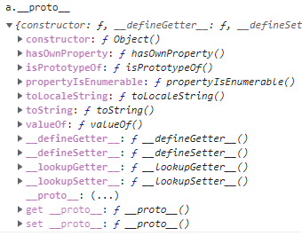
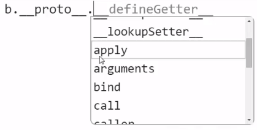
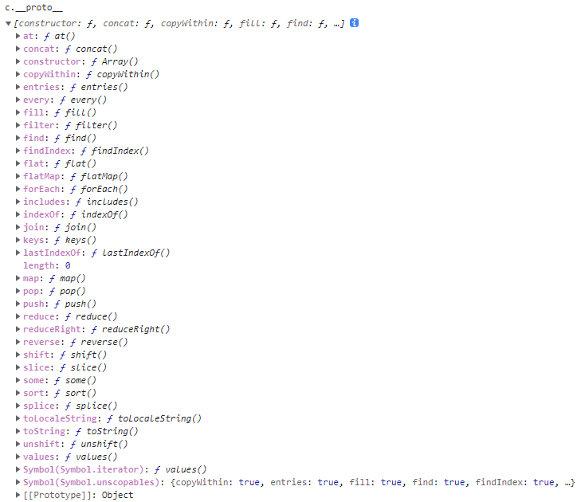

所有東西都是物件或純值
前一堂課了解到 JavaScript 中的 Prototypal Chain 後，這堂課將進一步探討物件中的 prototype。
在 JavaScript 中，所有物件都有 prototype，除了最基礎物件 base object。
那到底什麼是 base object 呢 ?
首先，我們透過 console 來看到每一種物件的 prototype，分別是物件 object、函式 function 與陣列 array。
1 | var a = {}; // object |
透過 a.__proto__ 我們可以看到物件的 prototype 也是一個物件，打開它會發現已經有許多預設的 method，包含我們在開發時常用到的 toString、valueOf 等等，從這裡就可以得知為什麼每當我們創造一個物件時就會有這些 method 可以使用，因為我們透過自己宣告的物件來使用這些 method 時，會發現自己身上找不到，便會透過 prototypal chain 的概念往 prototype 找到這個物件，所以我們宣告的物件就有這些 method 了。

接著來看到 function，我們一樣透過 b.__proto__ 來看 function 的 prototype，會得到一個空的函式，進一步在後方加上一個點 dot operator 查看它 method，會發現出現許多 method ，其中包含前幾堂課中學過的 call、bind 和 apply，同理這也就是我們在建立函式後會有這些 method 可以使用的原因了。

最後透過 c.__proto__ 看到 array 的 prototype，同樣會有許多預設的 method 供我們使用。

那麼回到最一開始的問題，什麼是最基礎物件 base object 呢 ?
其實就是一般物件 (前面範例的 a) 的 prototype 了，前面提到，所有物件都有 prototype，除了這個 base object 除外，所以當我們不斷透過 .__proto__ 指向物件的 prototype 直到指向這個 base object，它就會出現 null ，包含函式 function 和陣列 array 的 prototype 最後也會指向 base object，所以我們才會說所有物件除了 base object 都有 prototype。